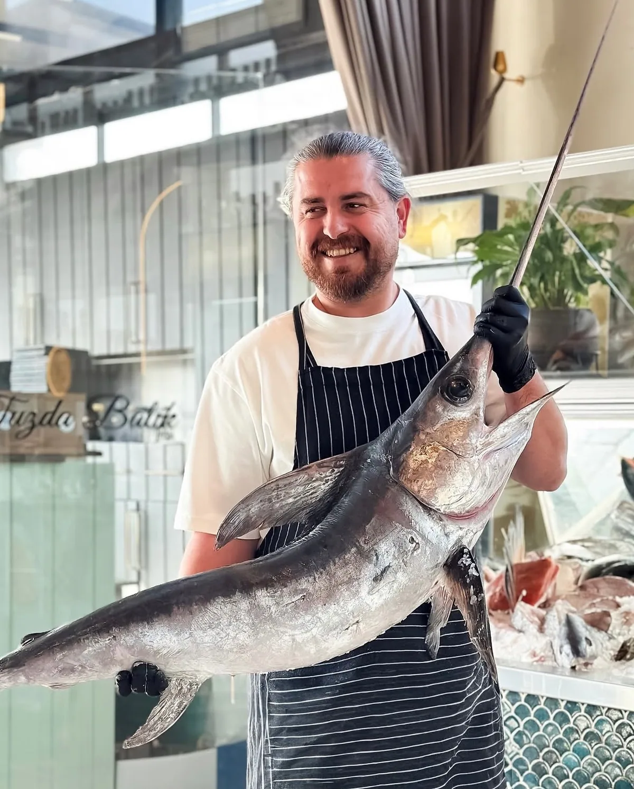
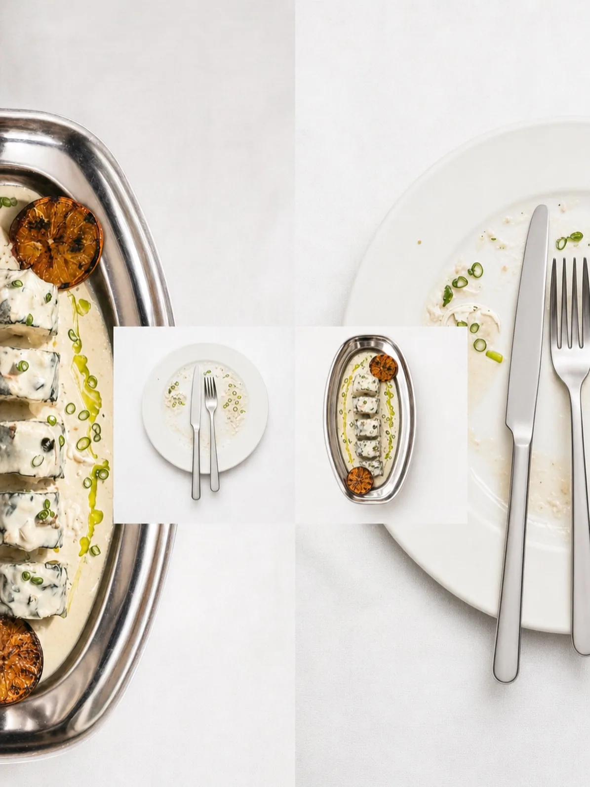

Erdem Şef'in Ustalığı,
Ege'nin En Zarif Sofrası.
Tuzla Balık Soyak'ın ruhunda, deniz mahsullerine ömrünü ve tutkusunu adamış Erdem Şef'in benzersiz ustalığı yatar. Ege'nin kadim çilingir ve balıkçılık kültürünü modern fine dining zarafetiyle taçlandıran Erdem Şef; sabahın ilk ışıklarında mezattan bizzat seçtiği deniz balıklarını, Ayvalık sızma zeytinyağı ve taptaze ada otlarıyla buluşturuyor.
Fırınlanmış enginardan aşk acısına, tereyağlı güveç karideslerden kömür ateşinde marine edilen mevsim balıklarına kadar masanıza gelen her tabak Erdem Şef'in titiz ellerinden çıkar. Soyak Siesta'nın ferah ve huzurlu atmosferinde, dost kahkahalarının kadeh seslerine karıştığı bu özel sofrada her an seçkin bir lezzet şölenine dönüşür.
Erdem Şef'in İmzası
Geleneksel deniz lezzetlerine şef dokunuşu, özel baharat dengesi ve gurme marinasyonlar.
Günlük Taze Balık Mezatı
Dondurulmuş ürün kullanılmadan, her gün doğrudan yerel kıyılardan seçilen taze mevsim balıkları.
Büyüleyici Atmosfer
Soyak Siesta'da bembeyaz örtülü masalar, zarif mum ışıkları ve huzurlu teras keyfi.
Zengin Çilingir Kavı
Göbek rakılarından meşe fıçı rezervlerine Türkiye'nin en seçkin rakı ve butik şarap seçkisi.